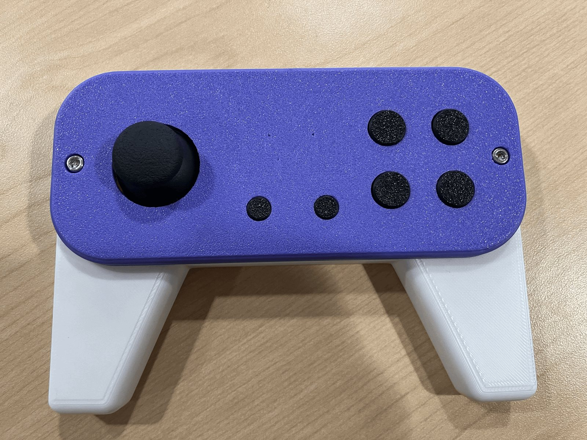

CAD / Fabrication / Adaptive Hardware
Aki Uddin
Mechanical Engineering Student
B.S.E. Mechanical Engineering, University of Michigan
I design parts in CAD, print and machine them, and test whether they actually work in someone’s hands.

Selected Work
Hardware designed for the hands that use it
About
From a sketch in Onshape to a part someone can press
Skills
What I use to design, build, and test
Projects
Case studies
No projects match the current filters.
Involvement
Teams, work, and student organizations
Resume
Resume
Your browser can't preview the PDF inline.
Use the download button above to open it.